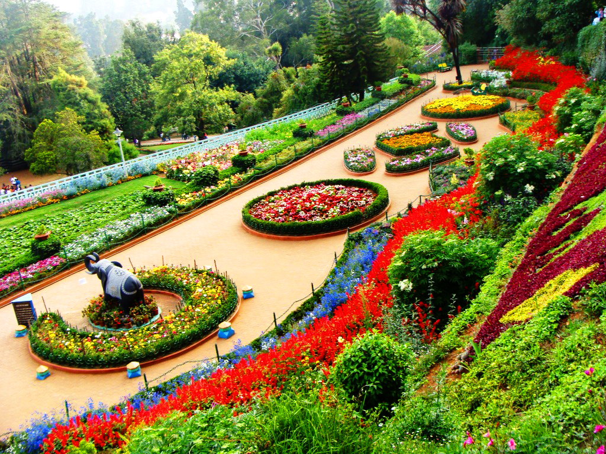

Sukhna Lake in Chandigarh, India, is a reservoir at the foothills (Shivalik hills) of the Himalayas. This 3 km² rainfed lake was created in 1958 by damming the Sukhna Choe, a seasonal stream coming down from the Shivalik Hills. Originally, the seasonal flow entered the lake directly causing heavy siltation. To check the inflow of silt, 25.42 km² of land was acquired in the catchment area and put under vegetation. In 1974, the Choe was diverted and made to bypass the lake completely, the lake being fed by three siltation pots, minimising the entry of silt into the lake itself.
Recommended: Check out their website to know more.
A rose garden or rosarium is a garden or park, often open to the public, used to present and grow various types of garden roses, and sometimes rose species. Most often it is a section of a larger garden. Designs vary tremendously and roses may be displayed alongside other plants or grouped by individual variety, colour or class in rose beds. Technically it is a specialized type of shrub garden, but normally treated as a type of flower garden, if only because its origins in Europe go back to at least the Middle Ages in Europe, when roses were effectively the largest and most popular flowers, already existing in numerous garden cultivars.
Recommended: Visit the place today to see witness its beauty.
The Rock Garden of Chandigarh is a sculpture garden for rock enthusiasts in Chandigarh, India. It is also known as Nek Chand Saini's Rock Garden of Nathupur after its founder Nek Chand Saini, a government official who started building the garden secretly in his spare time in 1957. It has spread over an area of 40 acres (16 ha), and is completely built from industrial, home waste, and discarded items
Recommended: Visit the garden today to see witness its beauty.